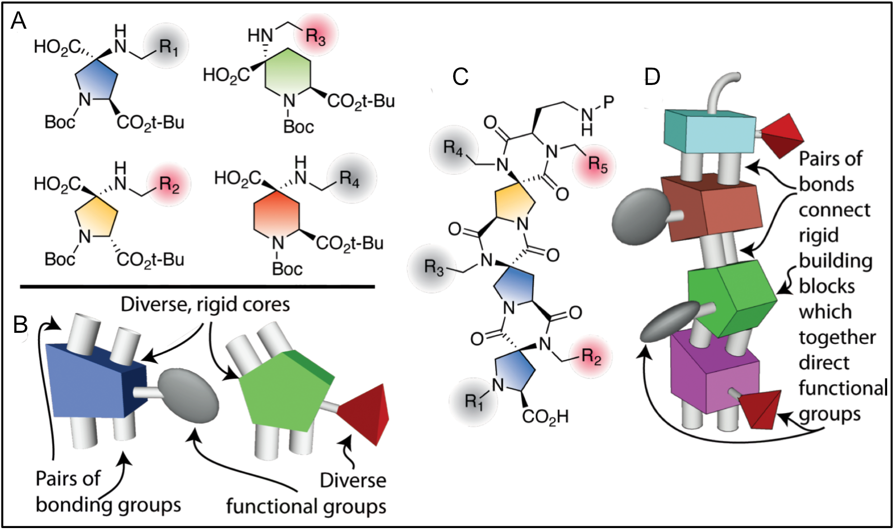

We design and synthesize spiroligomers — atomically precise, shape-programmable nanostructures assembled from bis-amino acid building blocks. By controlling molecular shape and function with atomic accuracy, we engineer new therapeutics, diagnostic devices, catalysts, and membranes.
Spiroligomers are rigid macromolecules built by fusing small ring-shaped monomers together through pairs of covalent bonds. Because each building block locks into a defined shape, the assembled structure is atomically precise — every atom sits in a known, designable position.
This precision lets us program three-dimensional shape and chemical function the way nature does with proteins, but using synthetic, stable, and highly tunable chemistry. The result is a molecular construction kit for building functional nanostructures from the bottom up.
Developed in the Schafmeister Lab, Department of Chemistry, Temple University.

Four directions where atomically precise design changes what's possible.
Designed catalysts that position functional groups on a rigid scaffold — esterase and Claisen mimics.
Protein bindingShape-programmed molecules that penetrate cells and disrupt protein–protein interactions.
Metal bindingArchitectural spiroligomers that template binuclear metal complexes with atomic precision.
ScaffoldsRigid rods for distance measurement, electron transfer, and molecular machines.